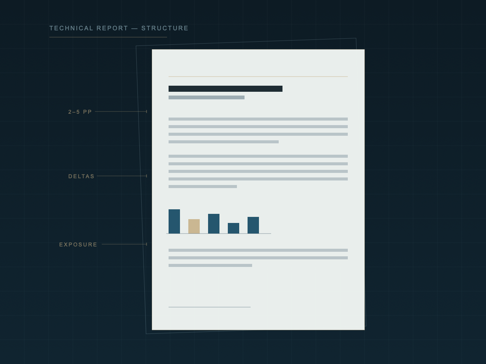

Process
A controlled file review.
Counsel often receives massive estimate files and cannot tell what actually matters. Meridian turns that material into organized analysis — in a sequence built for it.
Counsel often receives massive estimate files and cannot tell what actually matters. Meridian turns that material into organized analysis — in a sequence built for it.
Everything counsel has: estimates, photographs, reports, supplements, correspondence. No conclusions yet — the record comes first.
What is actually contested: the damage, the repair scope, the price, or the documentation. Most files mix all four. We pull them apart.
The building where the matter warrants it. The documentation always. Conditions observed, measured, and recorded.
Line-level comparison across the estimates and reports in the file. Deltas located, quantified, and traced to their source.
A scope disagreement and a pricing disagreement are different arguments. Keeping them apart is most of the clarity.
A technical report counsel can use — organized, supported, and written for mediation, negotiation, or whatever comes next.
Numbers are only useful when the scope behind them is understood.

Reads in 15 minutes Built for mediationOne document, organized for use. Depending on the engagement, the report includes:
What the building shows — documented with photographs, measurements, and notes.
What the file materials support, item by item, against the record.
The numbers organized — estimate differences charted, quantified, and explained.
Where the dispute actually sits, and what the cost exposure looks like across positions.
Send a brief description of the matter. We respond within one business day, beginning with a conflict check. Files can be sent after conflict and intake.